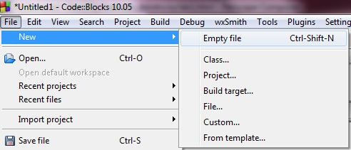
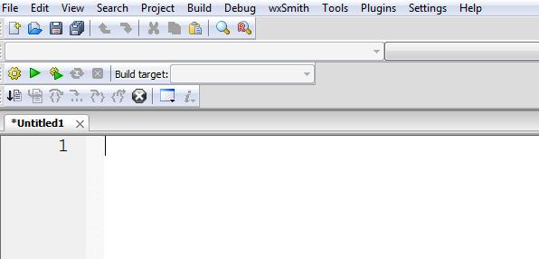
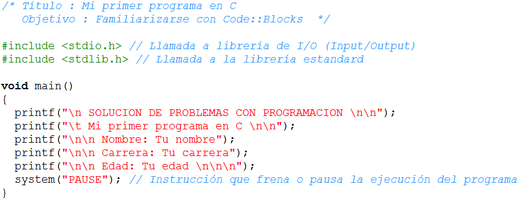
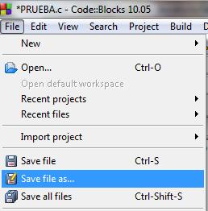
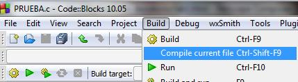
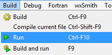
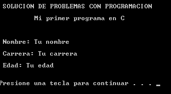

Objetivo:
Aplicar los conceptos
sobre la creación de un programa y uso de printf().
Forma de
trabajo:
Individual dentro del aula

Tiempo
estimado:
30 minutos

Instrucciones:
- El propósito de esta primer práctica es simplemente
te familiarices con el uso del Ambiente Integrado de Desarrollo (IDE por
sus siglas en ingles) de Code::Blocks.
- No es necesario que en esta práctica te aprendas todas
las opciones del ambiente de desarrollo, conforme avance el curso adquirirás
más experiencia.
Cargando Code::Blocks
El primer paso que debemos realizar es abrir el ambiente
de desarrollo de Code::Blocks. Windows + F > Aplicaciones
> CodeBlocks . Una vez que se tiene abierto el ambiente de desarrollo,
el profesor dará una síntesis del IDE de Code::Blocks.
Realizando
mi primer programa
Para comprender mejor las opciones que vamos a estar utilizando
en el curso, vamos a realizar un programa, el cual lo tienen que teclear,
compilar y correr.
Selecciona del menú "File",
la opción de "New" > "Empty file".

El editor aparecerá en la pantalla.

Teclea en el editor de C lo siguiente:

Guardando
el programa fuente en C
Después de introducir el programa entero dentro de la ventana
de edición, el programa debe ser guardado:
Selecciona el menú "File".
Elige la opción "Save file as".

Selecciona la unidad de disco donde lo guardarás (normalmente
será "D:") o la carpeta de "Mis Documentos".
Guarda el archivo como: L1_Matricula.c, por ejemplo L1_1204322.c
Compilar
Todos los archivos fuentes deben ser compilados y entonces
ligados con librerías para producir un programa ejecutable. Los
comandos "Compile current file" o "Build" en Code::Blocks proveen este
servicio:
Selecciona el menú "Build".
Elige la opción de "Compile current file" o la opción
de "Build".

Si compiló correctamente tu programa no aparecerá,
en la parte inferior de la ventana, ninún error o warning, de lo
contrario, podrás visualizar en esta sección una pequeña
descripción de tus posibles errores o warnings.
Si no compiló correctamente trata de corregir los
errores según la descripción mostrada en la parte inferior
de la ventana. Una sugerencia para este laboratorio es comparar lo que escribiste
con lo mostrado. No dudes en pedir asesoría de tu profesor.
Ejecutar
Una vez que tu programa compila correctamente, lo puedes
ejecutar:
Selecciona el menú "Build".
Elige la opción de "Run"



Forma de
entrega:
- Envía tu laboratorio por blackboard, no se aceptarán
laboratorios por ningún otro medio.
- Envía solo tus archivos *.c.
- Los laboratorios enviados posteriormente a la fecha límite
NO SERÁN CALIFICADOS.
.
INSTRUCCIONES PARA ENVIAR TU LABORATORIO
POR BLACKBOARD
- Haz clic en la actividad
de Entrega de Laboratorio.
- Escribe comentarios
si lo consideras necesario.
- Da clic en el botón
de Browse My Computer y localiza el archivo *.c. Si necesitas
agregar más archivos repite este proceso hasta agregar todos tus
archivos.
- Haz clic en Submit.
- Al indicar que
ha subido exitosamente hacer clic en OK.
. |